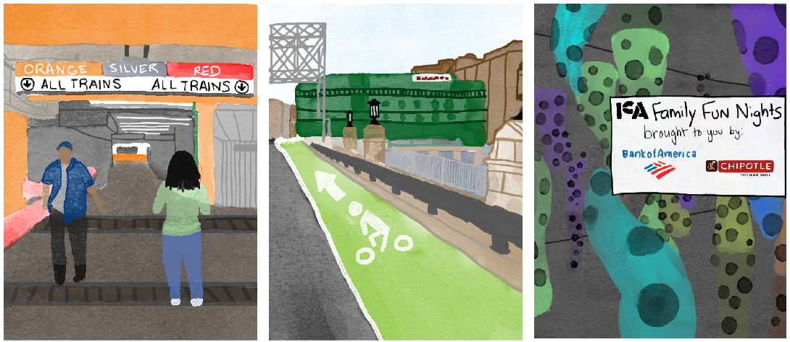

By Danae Bucci, Jasmine Heyward, Jasmine Wu, and Erica Yee
While Boston is promoting the Seaport as its new and exciting entertainment hub, it isn't accessible to many
The decades-long and still ongoing debate about the identity of Boston’s so-called newest neighborhood starts with its name.
As the city hotly debated a master plan to develop the South Boston waterfront, City Council President James M. Kelly pushed back, believing that it would negatively impact local working families already in Southie. "We don't need a whole new neighborhood. We already have a neighborhood," Kelly told the Boston Herald in 1998.
Mayor Thomas M. Menino finally ordered the Seaport District to be officially known as the South Boston Waterfront in June 1999 as a result of Kelly’s objection.
Years later, the fight intensified again as an increasing number of shiny new buildings rose rapidly on top of what was previously abandoned warehouses and parking lots.
Michela West, for example, grew up and Boston and recalls seeing how sparse the neighborhood used to be. “I remember when there was nothing around here but construction,” she said.
Now 20, West works at the gift shop in the Institute of Contemporary Art, and witnesses firsthand how quickly things are changing.
To see it, even five years later, with all these new buildings is such as strange thing. It’s weird how fast this part of Boston has developed.
– Michela West, 20, Brighton resident and ICA employee
When developers closed a $200 million deal near Pier 4 called the “Seaport Development Project” in 2006, Southie leaders pushed to preserve the name the harborfront as an extension of their nearby residential neighborhood, according to a Herald report at the time.
Much of the revitalization — or gentrification, as some see it — is a result of Menino prioritizing development of the Seaport during his tenure as mayor. He dubbed it the “Innovation District” in 2010 in a push to create a tech hub rivaling Cambridge. In the years leading up, he had also been a strong proponent for getting the now iconic Institute of Contemporary Art and massive Boston Convention and Exhibition Center built there.
These days, official city documents and websites refer to the area as the “South Boston Waterfront.” However, the simpler, trendier “Seaport” is the everyday name for the neighborhood now known for gleaming office buildings, upscale hotels with harbor views, and tourist attractions. That distinction from South Boston and other older established neighborhoods in terms of demographics and perception manifests particularly in the area’s accessibility from nearly anywhere else in the city.
Despite the Seaport’s proliferation of cultural institutions and recreational activities, its limited public transportation and pricey venues disenfranchise many of the locals it was intended to serve.
First stop: Logistics that don't work for many
Although the Seaport has shifted in name and skyline, transportation to and from the neighborhood has not been developed by the city at nearly the same rate.
For example, the Seaport is only serviced by one train — the Silver Line with three stations — and only two bus routes run through the neighborhood.
West lives in the Allston/Brighton area and said it’s only through a combination of a bus and two trains that she gets to work every weekend. It takes an hour each way.
That lack of transportation is exacerbated by the increased traffic and congestion that development inevitably brings. All these challenges make the Seaport’s alluring new restaurants and recreational activities inaccessible to many residents of Boston.
If a student biked from Northeastern University to the Institute of Contemporary Art, the three and a half mile trip would take only 25 minutes. According to a 2015 study of transportation in the Seaport, 14 percent of trips originated from this area — Boston’s “core” — which includes everywhere from the North End to Mission Hill.
But the journey would also include a perilous ride across one of three bridges. Two force riders to choose between biking on the often crowded pedestrian sidewalk or squeezing in next to zooming traffic. One has a narrow bike lane. Once across the bridge, the Seaport only has three miles of bicycle paths and offer “limited” bike parking options, according to the study.
If a family of four who lived farther — for example from Somerville — wanted to enjoy a Saturday at the Boston Children’s Museum, their trip might include a 20 to 30-minute walk to a red line shuttle bus, because the Red Line, which departs every 15 minutes, doesn’t run between Harvard and Alewife on weekends. They would also have to skip the stroller since elevators at Harvard station are out of service this month.
Dropped off at South Station, the family would spend another 10 minutes walking across a bridge. 9 percent of trips to the Seaport originate from the Cambridge/Somerville area, but the nearest Red Line stop is 8 minutes away. Their trip would cost $18 in transportation alone, not accounting for the city’s proposed fare hike for this summer.
Although North Station is a popular transportation hub, it is still a trek to reach the Seaport. If someone visiting Boston wanted to go to the Convention Center from North Station, the trip would take 25 minutes — transfer from the Orange Line to the Red Line, and then a 15 minute walk. The convention visitor could also opt to the take Silver Line instead of walking, but they would be relegating themselves to buses that are at 123 percent of maximum capacity during rush hour, according to the study.
One could also venture a trip on the ferry, which just opened earlier this year. It takes 20 minutes to ride from Lovejoy Wharf near North Station to Fan Pier in the Seaport. However, currently the ferry only allows five seats at $12 each for the commuting public — the rest are reserved for employees of copmanies in the Seaport, who ride for free.
Though someone who works in the Seaport might have the option driving, for example from Brookline to a Seaport office, it would mean maneuvering to find parking in lots that are at 80 percent capacity during peak hours and often cost $30 for just a few hours.
Josh O’Mara and Madison Gonzalez, who were visiting from New Jersey and staying in Quincy, were a little luckier. They found street parking, though it was still $15 for all-day parking on a Sunday.
Still, some of the lots they drove past were full. Though they were only making a weekend trip to Boston, they opted not to visit other neighborhoods since parking was so tough to find.
There are also a fortunate few who work for corporations that provide private shuttle buses to the Seaport. The study, however, identified that the redundant shuttle routes leave others with “roadway congestion and increased emissions.”
Lindsay Leavitt and Daryn Decesare spent their Sunday with their children, 2 and 3 months, on the greens outside of the ICA. Leavitt, who lives in Southie, said that she chose to switch daycares due to the long trip to the Seaport.
I would pick [my son] up in the car … and it’s a drive, and it would take me 30. Just because you’re dealing with all the commuters.
– Lindsay Leavitt, 35, Southie resident
If you do manage to find transportation to the neighborhood, you might find yourself in a neighborhood with recreational activities that, though designed for the public, are often too pricey to afford.
Finding activities to do transcends every cross section of person there is. Whether you’re a family looking for kid-friendly fun, a young adult or an art enthusiast, cities try to create entertainment to please everyone and Boston is no exception.
The Institute of Contemporary Art was one of the first big attractions in the Seaport. With one of the best views of the harbor in the city, hundreds of thousands of people visit over a dozens rotating exhibits each year, and it is an ideal attraction for families, young adults, and art lovers.
O’Mara and Gonzalez, the tourists from New Jersey, chose to go to the Seaport solely because they were looking for interesting Boston museums, but museum prices are often a limiting factor. General admission to the ICA would have $15 for each person, with discounted $10 tickets for students, but O’Mara and Gonzalez only paid $8 because the museum is under construction.
After paying for transportation to get to the ICA and a meal, the costs add up. Although the museum offers discounts such as free tickets for ICA members, free tickets for children under 18, and free admission on Thursdays, each of those offers disenfranchises a different group of people, leading them to look for other activities to do. Museum membership is a annual fee starting at $65 each year. Free entry for children helps somewhat, but the adults accompanying them will still have to pay. While free entry on Thursday nights can benefit many, it doesn’t work for people working evenings in food service or retail.
The Lawn on D would be a great alternative. The aesthetically appealing outdoor hangout has quickly become an Instagram-worthy hot spot for young adults, and its free price tag makes it even more enticing. The lack of accessibility, however, makes it difficult for a lot of young people to go. The closest subway stop is not even in the Seaport, and the closest Silver Line and local bus stops are those serving the Boston Convention & Exhibition Center. That venue poses its own problems.
BCEC often hosts conventions with a hefty price tag. Typically starting at $50 per person, many who come from disenfranchised communities cannot afford to go to these events. The center has also been criticized for a layout that makes it very difficult for families with young children and people with disabilities to navigate it. Compared to other convention centers, some find the signage confusing, especially since there is only one bathroom with nursing facilities in the entire center.
The convention center’s events are usually designed for teens and adults, leaving parents of young children looking to go to the nationally-ranked Boston Children’s Museum. Tickets are $17 for all visitors over 12 months old, with members getting free admission. The similarly acclaimed Houston Children’s Museum is $12. The seaport’s attraction could easily be too much of a strain for a family, especially since people need to eat.
After tech companies and startups, the Seaport is probably best-known for its restaurants. From the high-class Morton’s The Steakhouse to the Harpoon Brewery, the Seaport is touted as the home of restaurants to accommodate every taste.
That “something for everyone” quality doesn’t extend to socioeconomic status, though.
Parents Leavitt and Decesare had gone on their stroll after brunch at Row 34, where entrees range from $12 for lettuce cups to $24 for a Shrimp Hash. “For us, it’s actually pretty convenient,” Leavitt said. Brunch is a fairly regular weekend outing for them. But, she said, “if I was in college, there was no way in hell I could afford any of this.”
Aside from fine dining, “fast casual” restaurants dominate the Seaport. These restaurants offer quick but healthier choices and often cater to the large population of millennials and Gen Xers working in the Seaport. While these restaurants may help workers stick to their nutrition goals, it can be difficult to eat a filling meal for under $10. At Flour Bakery + Cafe, a well-loved local chain, the cheapest entree item is a $9.50 sandwich. Healthy fast-food chain b.good’s cheapest entree has a friendlier $6.99 price tag, but the item is a standard burger with lettuce, tomato, onions, and pickles. Once fries and a drink are added, the price jumps to $12.27 without tax. Asking growing pre-teens to eat a plain hamburger for lunch might seem unfair, but it could be necessary for a family of four that can’t spend $50 on lunch.
While the potentially-deceiving lack of combo discounts can happen in any neighborhood, this happens more often in the trendy, fast-casual restaurants that dominate the Seaport. There is a b.good on Northeastern’s campus, neighbors with the even more expensive European cafe Tatte. Down the street, however, are Amelia’s Taqueria, where a large burrito is $8.25, and Boston Shawarma where falafel sandwiches start at $7.50. While they aren’t as healthy or trendy, these restaurants offer hearty meals that could save a family a lot of money.
Additionally, the Seaport’s sit-down scene is almost entirely fine-dining. In other trendy parts of the city like Fenway, couples can have a nice sit-down experience for $30. At Sweet Cheeks Q, the $26 Fat Cheeks Tray could feed two people. Among the Seaport’s best restaurants, however, the cheapest entrees would put you past $30 for two people, and they are almost universally some version of a house or Caesar salad. A middle-class couple looking to treat themselves after a day at the museum would be forced to limit themselves to soup and salad or spend at least $50.
Hover over the circles below to learn more about restaurant costs and locations in the Seaport.
Moving forward: How to make a better Seaport

The first, and perhaps most important step, to making the Seaport more accessible is to improve transportation options to the district. The bus/subway hybrid of the Silver Line and a handful of local buses routes are the only public transit options, and the local buses often don’t run when a major event is in town. With Silver Line connections to the Red and Blue Lines, people living near the Orange and Green lines, including many of Boston’s lower-income families, are forced to transfer twice to take public transit into the district.
One way to increase accessibility would be to extend the SL2 to Downtown Crossing. This would connect the Seaport to the other two subway lines, via the Winter St. Concourse in the case of the Green Line. While one or two stops on the Red Line may not discourage college students headed to a convention, a second transfer is a serious hassle for families with young children and no car. New underground construction is seriously expensive, but it would open up the Seaport to a host of people who have ruled it out as inconvenient. The spending power of young professionals in Jamaica Plain is equal to those living in Somerville, who will see a Green Line extension in the coming years. Why wouldn’t we add this single stop – below or above ground – to connect the other half of the city with an area that’s being increasingly developed?
Additionally, the Seaport’s sidewalks should be designed to accommodate all. From narrow sidewalks on bridges and overpasses to sidewalks surrounded by scaffolding for never-ending construction, there are many places in the Seaport where strollers and wheelchairs wouldn’t fit through. Leavitt and Decesare said that taking Atlantic Avenue would be the most convenient route for them, except it ends abruptly on a commercial road at one side, forcing their family to turn around.
This has been a complaint of mine: That bridge that's not working between Seaport and Atlantic Ave, it would be great if they turn that into a more accessible pedestrian walkway similar to what the High Line is in New York City.
– Daryn Decesare, 36, Southie resident
As a newly constructed neighborhood, there’s no excuse for street infrastructure that excludes people with strollers or mobility aids. Those who can’t wander around looking for restaurants or attractions won’t feel comfortable planning a full day in the Seaport.
Lastly, restaurants, museums, and other attractions can collaborate to offer discount days designed for students and families who normally couldn’t afford a day in the district. The ICA already offers free admission for all on Thursday nights, and free admission for two adults with a child under 13 years old on the last Saturday of the month. Why couldn’t they collaborate with some of the fast-casual restaurants nearby to offer discounted family meals to people who show their ICA ticket? Add a fun outdoor activity at the Children’s Wharf Park (and maybe discounted Children’s Museum tickets) and there’s a fun night for families at a reasonable budget.
The Seaport is full of innovation and excitement that makes Boston better, however, it’s difficult for many residents to enjoy it. With a few thoughtful changes, we could make it the new playground for the whole city.
Thanks to our professor Steven Braun for all his guidance and inspiration, and to ZevRoss.com for the D3 animation tutorial.